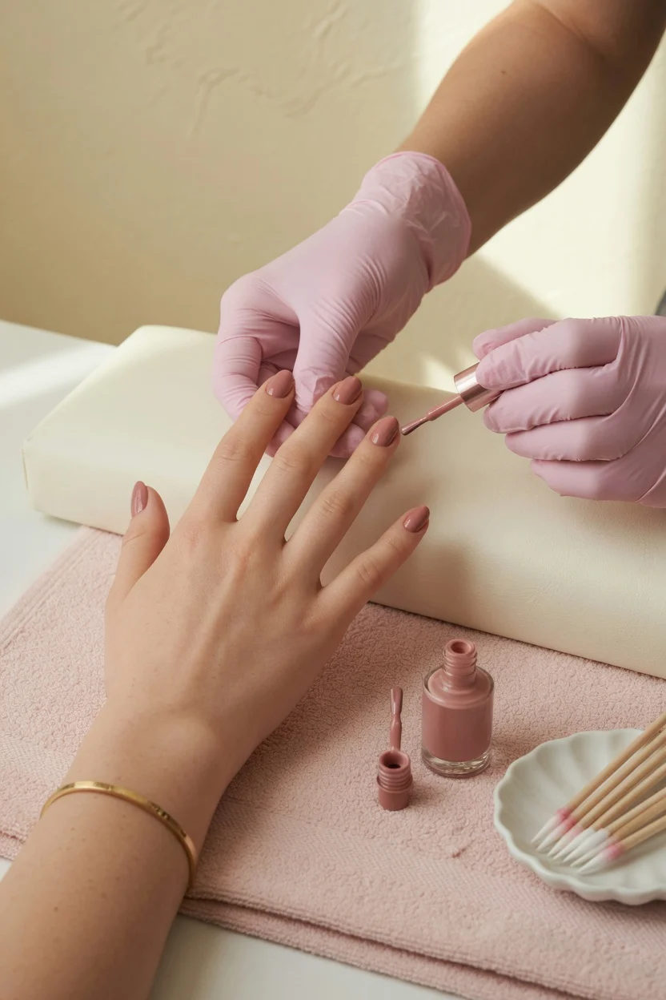
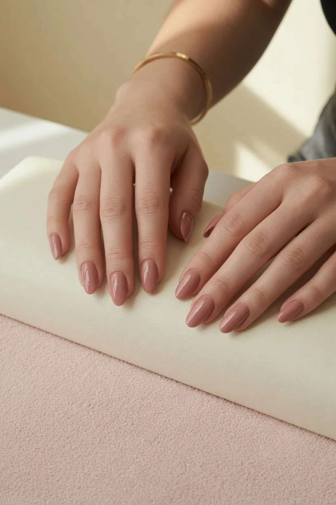
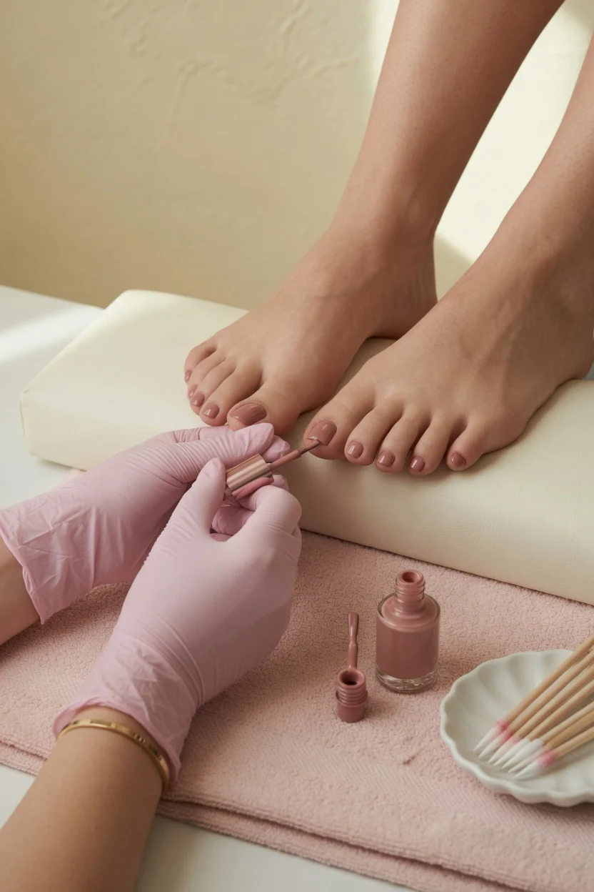
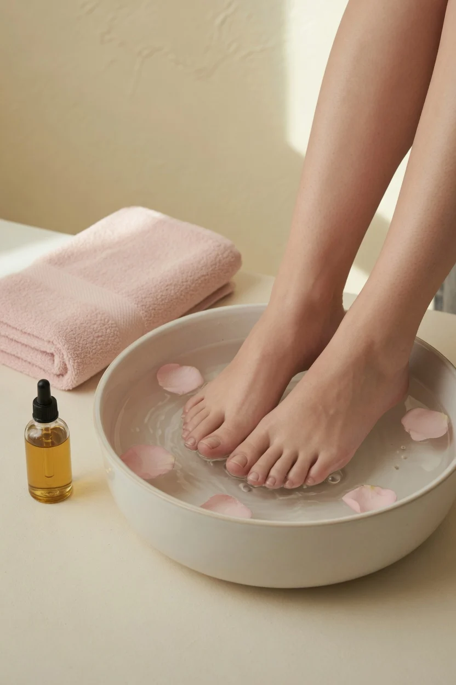

NNathalia LopesGoogle
★★★★★
Lugar super aconchegante e a melhor manicure da região!
Avaliação pública no Google
Especialista em cutilagem, com manicure, pedicure, esmaltação em gel, alongamento no molde F1 e spa dos pés. Atendimento no Riacho Fundo II.
5,0 · 15 avaliaçõesLilian Galvão se apresenta como especialista em cutilagem e, na agenda, como quem faz esse cuidado há mais de dez anos.
O perfil @galvaomanicure reúne os trabalhos de mão e pé, o retorno de clientes e o link para marcar horário. Em uma arte do próprio perfil, o studio resume o que oferece: manicure, pedicure, esmaltação em gel e spa dos pés. O alongamento no molde F1 e a manutenção também estão na agenda.
Imagens ilustrativas dos cuidados da agenda. Os trabalhos reais estão no Instagram @galvaomanicure.

Esmaltação em gel · ilustrativa
Pedicure · ilustrativa
SPA dos pés · ilustrativaCuidado das unhas das mãos, com a cutilagem que o perfil destaca. Na agenda, 60 minutos.
Cuidado dos pés, também sozinho ou junto com a manicure. Os dois juntos levam 2 horas na agenda.
Opção publicada na agenda, com 2 horas de atendimento. Há também esmaltação comum, só para pintar.
Alongamento de 2 horas, com manutenção F1 e remoção de gel em itens separados da agenda.
Com cutilagem ou sem cutilagem. A esfoliação dos pés também aparece à parte na agenda.
| Manicure | 60 min | R$ 40 |
| Pedicure | 60 min | R$ 40 |
| Manicure e pedicure | 2 h | R$ 60 |
| Esmaltação, somente pintar | 60 min | R$ 20 |
| Esmaltação em gel | 2 h | R$ 70 |
| Alongamento no molde F1 | 2 h | R$ 130 |
| Manutenção F1 | 2 h | R$ 100 |
| Remoção de gel | 40 min | R$ 30 |
| Esfoliação dos pés | 20 min | R$ 20 |
| SPA dos pés, sem cutilagem | 60 min | R$ 70 |
| SPA dos pés com cutilagem | 2 h | R$ 100 |
| Pacote de unhas | 2 h | R$ 190 |
Valores e durações lidos na agenda Sense em 22/10/2026, o mesmo link da bio do Instagram. O pacote de unhas não descreve o que inclui. Confirme o combinado na hora de marcar.
O horário oficial sai pela agenda do Instagram. Se preferir, mande uma mensagem no WhatsApp com o serviço e o dia.
A ficha do Google classifica o endereço como salão, e as avaliações falam de manicure, unha bem feita e um espaço aconchegante.
Lugar super aconchegante e a melhor manicure da região!
Avaliação pública no GoogleFaço unha com ela já tem alguns anos e ela é perfeita, unha bem feita e atendimento incrível.
Avaliação pública no GoogleSimplesmente a melhor. Saio da Samambaia pra ir até ela.
Avaliação pública no GoogleQN 8C, conjunto 3, lote 25, loja 3, Riacho Fundo II, Brasília/DF.
O Google mostra a QN 8C com o CEP 71808-303. O complemento, conjunto 3, lote 25, loja 3, é o ponto que a agenda abre no mapa. Nesta consulta, em 22/10/2026, a ficha aparecia fechada e com abertura na sexta às 8h. O quadro da semana não estava expandido.